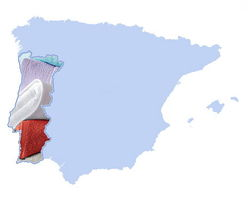

De: La Frikipedia, la enciclopedia extremadamente seria.
De: La Frikipedia, la enciclopedia extremadamente seria. De: La Frikipedia, la enciclopedia extremadamente seria.
| De la serie Países del planeta tierra: | |||||
| Comunidade Autônoma Portuguesa | |||||
|---|---|---|---|---|---|
| |||||
| Lema: Eso sólo le pasa a los otros | |||||
| Himno: A portuguesa en bolas
| |||||
| 
| |||||
| Capital | Lisboa | ||||
| Mayor ciudad | Madrid | ||||
| Lenguas oficiales | Se abla (algún maldito retrasado lo había escrito sin "h") más Español que portugués. | ||||
| Gobierno | Monarquía bananera | ||||
| Don | Duarte Pio (el mostachón) | ||||
| Área | España | ||||
| Población | x + y | ||||
| Moneda | Toalla | ||||
| Zona horaria | GMT +0 | ||||
| Dominio Internet | .pt (PuTa) | ||||
| Código telefónico | todavía no se ha implantao
| ||||
| Somos independientes, no dependemos de nadie, .......bueno, solo un poco | |||||
En 1492 la Península Ibérica fue conquistada por los Rayos Catódicos que comenzaron una serie de OPAS hostiles y refundaciones de otros los reinos y cabildos que la componían para formar el país más grande y poderoso del Mundo. Pronto vieron que las diferentes realidades económicas podrían ser un motivo de conflictos , y decidieron darle una patada en los huevos a una región para que al resto se le cerrara el ojete del miedo, y así poder eliminar cualquier deseo de independencia que pudiera surgir en el resto del Reich Católico.
La región elegida para ser excluida fue Portugal, por varias razones:
Actualmente las mayores exportaciones de Portugal son esclavos y canis salidos. El ingreso per cápita es de tres esclavos por persona.
La venta de toallas a jubilados españoles ha decaído en los últimos años tras el rumor de que eran confeccionadas con pelos del bigote de las nativas y el turbio negocio de la trasquilación ilegal.
En la actualidad el puesto de trabajo más habitual entre los 35 y 72 años del varón portugués es la de pilotobrero, salir de las 5 de la mañana para llegar a las 6 de la mañana a cualquier punto de España a la obra, y llegar a casa portuguesa a las 20,30 cuando terminan a las 20 horas. No se sabe como lo consiguen, pero su puntualidad es tan notable como su higiene.
Tras separarse de españa(porque solamente sabían ser del PPSOE) Portugal creó Brasil e invadió varios continentes,creando el Imperio Portugués pero su gusto por apalancarse comiendo hizo que perdiesen todo poderío. Portugal no ha tenido ningún conflicto, pacto, amistad, enemistad, tratado, unión, alianza o guerra con ningún otro país desde hace diez años debido a que el último rey Portugués,Sebastián I de portugal, le gustaba demasiado conquistar países islámicos, de echo le gusta invadir países lejanos bajo al capote de la OTAN para que nos les acusen de neocolonialismo, y así de sopetón invadir otra vez todo el mundo. Portugal es tal vez el país europeo más olvidado de la historia, por eso los portugueses se pusieron tan contentos con el secuestro de una guiri. Actualmente están alentando el secuestro de niñas para que los periódicos del mundo vuelvan a fijarse en ellos y menos en las portuguesas.
El plan de los Ágata Ruiz de la Prada... en fin, un desastre de país y un escarmiento para ulteriores iniciativas secesionistas en las regiones españolas, aunque eso sí Portugal echó a su dictador,Antonio Salazar, y no le dejó morir en la cama, no como Espiña.
El gran abandono que estaba sufriendo provocó que se instalaran allí los lusos o lechuginhas (así es como llaman a los lusitanitos) y que fuera una nacion ambicionada por los imperialistasgallegos.
Se considera exhibicionismo no salir con bigote a la calle, por eso es tan difícil discernir entre hombres y mujeres y por eso hay muchas mafias dedicadas al tráfico de bigotes postizos.
El 50 por ciento de la población se dedica al comercio de toallas, el 35 por ciento a robar, y el 15 por ciento restante es político corrupto.
Cristiano Ronaldo es el heroe nacional para todos aquellos que se llaman José y se visten de mujer por las noches, a Figo lo prefieren, por el contrario, todos lo que se llaman Jorge y abusan de niños; esto es, el 90 por ciento de los adultos portugueses.
Su nombre procede de 'Portugalia'; así lo anuncian los locales cercanos a los puticlubs de Verín (poblado fronterizo con Portugalia por el norte) que anuncian en letras bien grandes PORTUGALIA; concepto que procede del lusitanismo que quiere decir "Portuputa galia".
Después de largas deliberaciones, y de darse cuenta de que en España son tan guarros que la venta de toallas no da para mantener la economía nacional, o mejor dicho, que el Corte Inglés se da cuenta de que no es rentable explotar portugueseiros, deciden en 2009 hacer la Firma de Lisboa y pasa a ser una comunidad autónoma española más. Esto compensa la futura independencia del País Vasco (aunque a regañadientes) y la demanda interpuesta por la SGAE para cobrar por derechos de autor de 400 años del tatara12nieto de Cervantes, el cual indica que la obra de Don Quijote le pertenecía. Se empiezan a vender Toros de Osborne en las tiendas de recuerdos, dejando a los Gallitos de Barro como pieza de coleccionista.
En realidad el futuro que tienen es luchar contra la rebelión de las toallas, que se han vuelto intransigentes y no secan bien (de ahi el lema "¡Putugal, Putugal! ¡¡toallas intransigentes no secais bien!!)
Corriente ideológica que busca restaurar la dignidad de Portugal como cacho de tierra. Iniciada por Dan Brown en su libro "El Último Pelo Pincho" que trata sobre los últimos herederos de un Imperio donde nunca salía el sol (por la sombra que le daba España) que un pastor de cabrones descubre al girar la cabeza a su izquierda en su Extremadura natal (obviamente, Tierra de Conquistadores). También es conocida como el "Plan Marchal Olé Olé". Fruto de la política carrillista del partido bisagra de Seta Pé, Eslerda Undida.
El "Plan Marchal Olé Olé" tiene como objeto restaurar la dignidad nacional portuguesa mediante la Constitución del 25 (redactada por el primer portugués de la historia, Boniato, en el año 25 DC, Durante Cristo) basada en los siguientes pilares:
  Imperios de Europa Imperios de Europa
|
|---|
| Eslovaquia |
Autor(es):